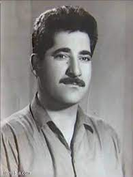

دیلان

محەممەد ساڵح کوڕی مەلا ئەحمەد دیلان کوڕی مەلا ساڵح کوڕی مەلا قادری شەوخوێن. (لەدایکبووی ١٩٢٧ - مردووی ٢٨ی تشرینی یەکەمی ١٩٩٠)، ماڵی باپیری لە قەڵاچۆلانەوە ھاتوونەتە سلێمانی، ساڵی ١٩٢٧ لە گەڕەکی گۆیژەی ئەو شارە لەدایکبووە.
کورتە
دیلانی شاعیر لە تەمەنێکی زووی لاوێتیدا ئارەزووی نووسینی شیعر و مەقام بێژی لا دروست بووە. لە ساڵی ١٩٤٩ دەستی کردووە
بەشیعر نووسین تا ڕۆژی کۆچی دوایی لەگەڵ شیعردا ژیاوە. لە تەمەنی بیست و یەک ساڵیدا شیعری بڵاوکردۆتەوە و جێدەستی خۆی لە ئەدەبیاتی کوردیدا بەجێھێشتووە.
لە دوای گۆرانی شاعیر بەسەرتۆپی نەوەیەکی نوێی شیعری کوردی لەقەڵەم دەدرێت. دیلانی شاعیر ھەر لە لاوێتییەوە خۆی و بەرھەمە ئەدەبیەکانی تەرخانکرد بۆ خزمەتکردنی کێشەی گەلەکەی و دژایەتیکردنی کۆنەپەرستان و بەکرێگیراوان. لە ساڵی ١٩٤٨ تا ١٩٦٦ نۆ جار زیندانی کراوە و گەلێک جاریش دوورخراوەتەوە و تووشی ئازار و ئەشکەنجەدان و نانبڕین بووە.
ژیان
سەرەتاکانی قۆناغی خویندنی لە مزگەوتی بابەعەلی بەسەر بردووە و دواتریش لە قوتابخانەی خالدییە قۆناغی سەرەتایی بڕیوەو
درێژەی بە خوێندن داوە و تا پۆلی سێی ناوەندی خوێندووە. دواتریش لە ساڵی ساڵی ١٩٤٧ لە فەرمانگەی تووتن دامەزراوە و وەک فەرمانبەرێکی ئاسایی ڕۆژانی تەمەنی بەڕێکردووە و سەرقاڵی پەیداکردنی بژێوی ژیانی بووە. زۆری پێ نەچووە ھەر لەو ساڵەدا لەسەر خۆپیشاندان گیراوە و دواتر ئازادکراوە. ساڵی ١٩٤٨ جارێکی تر گیراوەتەوە و لە کاری میری دەرکراوە.
ساڵی ١٩٤٩ لە سلێمانی گیراوە و بروویانە بۆ بەغدا تا لە ساڵی ١٩٥٠ دادگایی کراوە و بەکەفالەت بەردراوە. ساڵی ١٩٥١ بەئەندامی لیژنەی ئاشتیخوازانی سلێمانی ھەڵبژێردرا. لەسەر ئەمە گیرایەوە بەڵام زوو ئازادکرا.
ساڵی ١٩٥٢ بەھۆی ڕێکخراوی ئاشتیخوازانەوە نێردرایە شاری ڤیەننا لە نەمسا بۆ ئامادەبوون لە «کۆنگرەی نەتەوەکان بۆ بەرگری لە ئاشتیخوازی».
لەوێ ئاشنایەتی لەگەڵ نووسەری ڕووسی ئیلیا ئەھرینبورگ پەیدا کردبوو، لەو گەشتەیدا سەردانی ئیتاڵیا و سویسڕا و چیکوسلۆڤاکیا ڕۆمانیای کردبوو. کە لە ئەورووپا گەڕایەوە فەرمانی گرتنی بۆ دەرچووبوو. ئەو ماوەیەی لە گوندی دەرگەزێن و مورتکەی لای سلێمانی بردە سەر. دواتر لە ساڵی ١٩٥٤ خۆی ئاشکراکرد و بەدەستبەسەری نێردرایە بەغدا و لە ئەنجامی دادگا ئازادکرا.
ساڵی ١٩٥٤ دووبارە گیرایەوە، لە کەرکووک دادگایی کرا و فەرمانی سی ساڵ و نیوێک دەستبەسەری بۆ دەرچوو، ماوەکەی لە نوگرەت سەلمان بردە سەر و لە ناوەڕاستی ساڵی ١٩٥٦ گەڕایەوە سلێمانی لە سەرەتای ساڵی ١٩٥٨ لە فەرمانگەی بەڕێوەبردن لە پارێزگای سلێمانی دامەزرا. لە ناوەڕاستی ١٩٥٨
ژنی ھێنا، لە ١٩٥٩ جارێکی تر لە «میھرەجانی گێتیی لاوانی دیموکراتی» لە شاری ڤیەننا بەشداریکرد. ساڵی ١٩٥٩ بەشداربوو لە دامەزراندنی یەکێتی
لاوانی دیموکراتی کوردستان. لەسەر ئەوە گیرا، بەڵام زوو ئازادبوو. لە ناوەڕاستی ساڵی ١٩٦٠ بەتاوانی ئەوەی لە دژی دەسەڵاتی عەبدولکەریم قاسم خەبات دەکات گیرایەوە بەڵام زوو ئازادبوو. ساڵی ١٩٦١ دسیانەوە ھەر بەو تاوانە گیرایەوە و نێردرایە شاری کووت. لە ساڵانی نەھاتی کورد ١٩٦٣ – ١٩٦٤ دیلان لە گرتووخانەکانی کەرکووک و بەغدا بە دەستبەسەری مایەوە.
لە ناوەڕاستی شەستەکانی سەدەی بیستەم گەڕایەوە سەر کاری پێشووی لە فەرمانگەی بەڕێوەبردن لە پارێزگای سلێمانی. تا ساڵی ١٩٨٣ لەم کارەیدا مایەوە دواتر لەسەر داوای خۆی خانەنشین کرا.
ھەستی نەتەوایەتی
شیعرە نیشتمانییەکانی دیلان رۆڵێکی گەورەیان گێڕا لە بەرزکردنەوەی ئاستی ھوشیاری تاکی کورد و ھاندەرێکی سەرەکی بوون بۆ بەگژداچوونەوەی دوژمنە داگیرکەرە یەک لە دوای یەکەکانی ئەو سەردەمە کە وەک مۆتەکەیەک
باڵیان بە سەر وڵاتەکەیدا گرتبوو. دیلان نمونەی شاعیریکی چەوساوە و تێکۆشەرێکی بێ وچانی نەتەوەکەی بوو، ھەر ئەوەش بوو بووە ھۆی ئەوەی
دیلان وەک مەشخەڵێکی درەوشاوەی سەر ڕێبازی کوردایەتی لە قەڵەم بدرێ و ناوی لە تەک شاعیرە ھەرە باڵاکانی کوردا بھێنرێت. ئەم رۆشنبیرە گەورەیە ساڵی ١٩٥٤ بەبێ مۆڵەتی دەوڵەت بەشداریدەکات لە کۆنگرەی ئاشتی و ھاوکاری گەلان-دا کە لە شاری (ڤیێنا)ی پایتەختی نەمسا ساز کرا، لەسەر ئەم بەشداریکردنە کە گەڕایەوە رەوانەی زیندان کرا و بۆ ماوەیک دەستبەسەر کرا.
مەقام
دیلان لە دوا قۆناغەکانی تەمەنیدا
دیلان جگە لەوەی کە شاعیرێکی گەورەو
تێکۆشەرێکی خاوەن ھەڵوێست بوو، دەنگخۆشێکی کەموێنەو ئاوازدانەرێکی دەگمەنیش بوو، کە ھەمیشە جۆش و خرۆشێکی بێ وینەی لای گوێگرانی دروست
دەکرد و شیعرەکانی پی زیندووە دەکردەوە. گۆرانیی و مقامە بەسۆزەکانی دیلان کە شیعری زوربەیان نووسینی خۆیەتی و تا ئێستاش ھەر زیندوون و لە زۆربەی زۆری بۆنە نەتەوایەکاندا بەر گوێ دەکەون. ھەندێک لە دیارترین کارەکانی دیلان-ی شاعیر و ھونەرمەند بریتین لە (مامە کوڕنوو)، (ئەی نازەنین)،(شێخ مەحمودی زیندوو) و چەندینی تریش لە بەرھەمی ناوازە و کەم وێنە.
شیعر
دیلان و چەند ھاوڕێیەکی
ژیری دیلانی مەقام زان و جوان ناسی تەبیعەت ھەمیشە ھۆکارێک بووە بۆ
پۆشینی ھۆنراوەکانی بە پەردەیەکی تەنکی ڕۆمانسیەت و تێکەڵەیەک لە جوانیەکانی سروشت و نیشتمان، بۆ زێدە بەدەرخستنی ناسکی و جوانی شیعرەکانی.
بێجگە لە بەھرەی چرین و جوان ناسی، بە ڕوونی فەلسەفە زانی و خواستی قوڵبوونەوەی ئەدەبی لە شیعرەکانیدا بەدی دەکەون و ئاماژەیەکی روونن بۆ بە گرێدانەوەی ناوەرۆکی شیعرەکانی بە مانایەکی قوڵی فەلسەفییەوە. دیلان خەباتگێڕێکی دڵسۆزی میللەتەکەی و دەنگێکی ڕەسەن و ناسکی ھۆنراوەی نوێی کوردی بوو، شاعیرێکی نوێکاری ڕێبازی ڕیالیزمی نوێ بوو لە وێژەیی کوردیدا.
ئەگەر بەوردی سەرجەم دیوانی ھۆنراوە ناسکەکانی بخوێنیەوە، کە لە ساڵی ١٩٨٧دا بە
ھەوڵ و کۆشش و لێکۆڵینەوە و پێشەکی مامۆستا عەبدوڵڵا ئاگرین چاپکراوە، ھەست دەکەین لەباسی ناسکانەی سروشتی نیشتمانەکەی ئەوەندە بەجوانی و ناسکی و ڕازاوەیی دەربڕیوە، مەگەر ھەر مەولەوی مامۆستای و "گۆران"ی شاعیر سروشت و جوانی دەستەڵاتیان بەسەردا شکابێ. شاعیرێکی یەکجار توانا بووە و زۆر لە سەرخۆ چووەتە نێو ئەو جیھانە ئەفساوناوییە و بەرھەمی
جوان و پتەوی لە ھۆنراوەی ناسک و ناوەڕۆک قووڵی پێشکەش کردووین و سەرنجی ھۆنراوە دۆست و ڕەخنەگرانی ڕاکێشاوە لەبواری ھۆنراوەی نەتەوەیی و نیشتمانیشدا خانی و حاجی قادرێکی سەردەمە، بە تەکنیکێکی نوێ دەربڕینی ناسکی واتا قووڵی خوڵقاندووە و دڵسۆزیی خۆی بۆ خاک و نەتەوەکەی دەربڕیوە، ھەروەک لە ھۆنراوەیەکیدا بەناوی ڕەز ئەمەی کردووە و گوتوویەتی:
ئای کێ بێ بانگ و ھاوار و پەیام
بگەیەنێتە گوێی گۆڕەکەی (خەیام) بڵێ ھەی سەرشێت کوشتەی گڕی تەڕ
گەر تێتا ماوە یەک تۆز نرخ و فەڕ
تۆ لەسەر باکەی شووشەکەی شکان
لەگەڵ خودادا کردت بە زۆران!
ھەڵسە بەرەو ئەم ناوە ھەڵتووتێ
نەک شووشە شکا وا ڕەز ئەسووتێ!
شاعیر ئەم ھۆنراوەیەی کاتێک داناوە، کە ڕژێمی بەعس ڕەزی مێو و ھەموو جۆرە دارێکی بەردار و بێ بەریان دەسووتاند و خەڵکەکەیان ئەنفال دەکرد.
دیلان لە ھۆنراوەی باسیشدا، شاعیرێکی مەزنی سروشت و جوانییەو وەک وێنە کێشێکی ھونەرمەند ڕوودەکاتە دیمەنی جوانی گوڵزاری ڕازاوەی نیشتمانەکەی تاکو تابلۆی نایابیان بە ھۆنراوەی ناسک بکێشێ و ھۆنراوەی بە ھێز و پێزمان پێشکەش بکات.
باسەرنجێک بدەینە ئەم چەند دێرە ھۆنراوەیەی تاکو بزانین چۆن وێنەی ھۆنراوەی جوانی بۆ کێشاوین و با لە ھۆنراوەیەکی بە ناوی "سروودی وڵات" ورد بینەوە کە دەڵێ:
ساڵ پایزە، گەرمەی گەڵا ڕێزانە،
ڕێز بارانە، شێوەی ساڵی جارانە!
گەڵای ڕژاوی دار مازووی چیای بەرز
ملوانکەکەی ئەئاڵانە ملی وەرز
ڕووباری شین، سوور ھەڵگەڕاو بەلافاو
جارێ بێ دەنگ، جارێ بەھاژەو بەتاو
سەیری کەن دیلان چۆن باسی پایزە و گەڵاڕێزان دەکات و دیمەنی ئەو گەڵا زەردە وەریواە چەند بەجوانی دەکێشێ
و دەیکات بە دیمەنی زێڕباران، ئەمەش خوڵقاندنی جوانی ھۆنراوە لەشتی کەم بایەخی وەک گەڵای وەریوی کاتی گەڵاڕێزان ئینجا شاعیر باسی ئەو گەڵا ڕژاوان دەکات و دەیانکاتە ملوانکە و لە دێڕی دوایشدا باسی ڕووباری شینی سوور ھەڵگەڕاو بەلافاو دەکات، کە جارێ بێ دەنگە و جارێکیش بەتاو دەڕوات و ھاژەی دێت.
دیلان لە ھۆنراوەی ئەفسانەیی چ خۆماڵی بێ چ بیانی زۆر سەرکەوتووە و ئەفسانەی بیانی بە ئەفسانەی بیانی بە ئەفسانەی کوردی بەستۆتەوە و گوتوویەتی:
کە پزیشکی خوێنی زەردی (نێرۆن) پژا
کە پزیشکی خوێنی زەردی (نێرۆن) پژا
کە چەرمەکەی قرچ ھەڵگەرا لە دەم کەژا
بەشیرینی ھەچ گوڵێ دەم دەکاتەوە
لەم وڵاتە... (فەرھاد) مان بیر دەکاتەوە
شاعیر ئەفسانەی ڕووداوەکانی "نێرۆن"ی ئیمپڕاتۆری "ڕۆمان" تێکەڵ بە ئەفسانەکەی "شیرین و فەرھاد"ی کوردی دەکات و بەجوانی لە کارەکەی سەردەکەوێت.
مردن
شاعیری نوێکاری کورد و مەقامزانی محەمەد ساڵح دیلان لە ٢٨ی تشرینی یەکەمی ١٩٩٠دا و لە تەمەنی ٦٣ ساڵیدا دڵە گەورەکەی لە لێدان کەوت و ماڵئاوایی لە وێژە و لە ھونەر و کورد و کوردستان کرد و ناو و خزمەتگوزاریی بۆ میللەتەکەی تا ھەتایە بەنەمریی مانەوە